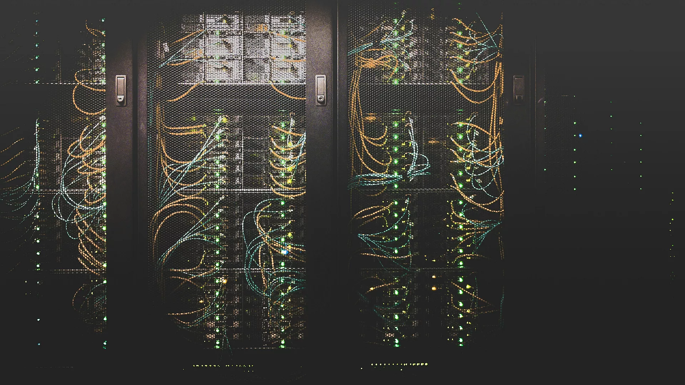

Green News
This Swiss data centre will heat 6,000 homes with recycled energy. Turning energy waste into a community benefit, using its excess heat to warm local homes...
Read MoreThis Swiss data centre will heat 6,000 homes with recycled energy. Turning energy waste into a community benefit, using its excess heat to warm local homes...
Read MoreFashion for Good, a Netherlands-based global innovation platform, has launched the Sorting for Circularity Project ...
Read MoreEnvironmental concerns, government policies, and technological advances are driving rapid growth in the EV battery market...
Read MoreThis video, from "The Engine", summarizes the modern recycling process. It covers collection, sorting, cleaning, processing into raw materials, and distribution for new product manufacturing. The goal is to minimize waste and promote a sustainable future. The video also includes segments on battery recycling, a plastic bottle recycling plant, a waste sorting line, and a waste treatment plant.